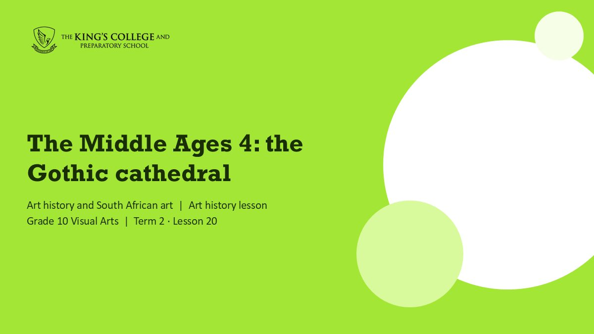

Term 2 · Lesson 20 · Art history lesson
The Middle Ages 4: The Gothic Cathedral
Start Here
Today I Will
- Explain the three inventions that made Gothic cathedrals possible
- Label a Gothic cathedral cross-section
- Compare a Gothic cathedral with a Romanesque church
Romanesque churches were dark and heavy. If you believed light was a sign of God's presence, how would you want a church to look?
Words to Know
| Word | Meaning |
|---|---|
| Pointed arch | An arch that meets in a point, directing weight steeply downwards and able to reach different heights. |
| Rib vault | A vault supported by a framework of stone ribs that carry the weight to piers. |
| Flying buttress | An external arch that carries the outward push of the vault to a heavy pier outside. |
| Stained glass | Coloured glass held in lead strips to make pictures in windows. |
| Rose window | A large round window with radiating patterns of stained glass, often over the main door. |
Slides

Videos
Notes
Pointed arches, rib vaults, flying buttresses and stained glass (Chartres, Notre-Dame): building towards light.
Three Inventions, One Aim: Light
- Pointed arch: Directs weight more steeply down than a round arch and can be built to different heights.
- Rib vault: Stone ribs concentrate the weight of the roof onto thin piers instead of solid walls.
- Flying buttress: An external arch carries the outward push of the vault over the aisles to a heavy pier outside.
- Open walls: Walls no longer carry the roof, so they open up for huge windows of stained glass.
- Upwards to heaven: Height and light make the building point towards God; the cathedral is a picture of heaven on earth.
Romanesque or Gothic?
| Romanesque | Gothic |
|---|---|
| Round arches, barrel or groin vaults | Pointed arches and rib vaults |
| Thick walls and heavy piers carry the roof | Flying buttresses and slender piers carry the roof |
| Small windows, dark and solemn inside | Huge stained-glass windows, filled with coloured light |
| Horizontal, solid, fortress-like | Vertical, soaring, skeleton-like |
| Example: Sainte-Foy, Conques | Examples: Chartres (mostly 1194–c. 1220), Notre-Dame de Paris (begun 1163) |
Gothic builders moved the weight outside so the light could come in.

Jesus called himself the light of the world. How did Gothic builders try to express this idea in stone and glass, and where do you look for light in your own life?
Practical
You need: Cross-section sheet, History booklet, VJ
Analysing a Gothic Cathedral
- Label the cross-section: nave, aisle, pointed arch, rib vault, flying buttress, pier and stained-glass window.
- Draw arrows to show how the weight of the vault travels to the ground.
- Describe Chartres Cathedral: date, place, materials and what a visitor sees inside.
- Analyse: explain how line (verticals), light and colour create the effect of the interior.
- Compare Chartres with Sainte-Foy in a short table of four differences.
- Opinion: which building would you rather pray or think in, and why?
Test Yourself
- Identify the three structural inventions of Gothic architecture.
- Explain how the flying buttress made large stained-glass windows possible.
- Compare the interior light of a Romanesque church with that of a Gothic cathedral.
Show answers
1. The pointed arch, the rib vault and the flying buttress. 2. It carries the outward push of the vault to an outer pier, so the walls no longer carry the roof and can be opened up for windows. 3. Romanesque interiors are dark with small windows; Gothic interiors are tall and filled with coloured light from large stained-glass windows.
Finished Early?
Sort the features of the two styles at a glance.
- Draw two columns in your VJ: Romanesque and Gothic.
- Sketch a quick arch in each: round on the left, pointed on the right.
- List at least four features under each heading from memory.
- Draw a small flying buttress and an arrow showing where it carries the push.